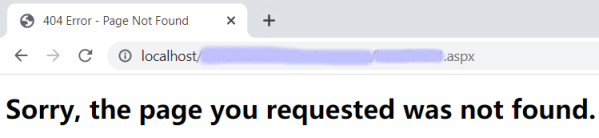

Enables HTTP Error Handlers. Scope Level: Environment Description
This property lists all the HTTP Errors that will be custom-handled by the application. Run-time/Design-timeThis property applies only at design-time. Samples
Create a 404.html file with the following content and upload it to the KB; set the extraction location path for your generators. <!DOCTYPE html> <html lang="es"> <head> <meta charset="UTF-8" /> <meta name="viewport" content="width=device-width, initial-scale=1.0" /> <title>404 Error - Page Not Found</title> </head> <body> <div class="container"> <main> <h1>Sorry, the page you requested was not found.</h1> </main> </div> </body> </html> Configure this property to bind the 404 HTTP error code to the 404.html file. With this declaration, if any 404 error occurs, your own error page is displayed to the user.  Note that your custom error page is relative to the web application’s context root. How to apply changesTo apply the corresponding changes when the property value is configured, execute a Build All. AvailabilityThis property is available since GeneXus 16 Upgrade 11. See Also
|
| Backlinks |
| Http Error Handlers property |